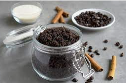
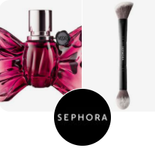
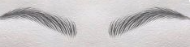
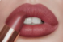
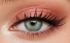

COFFE SCRUB RECIPE
Source Taste of home
Ingredients:
- 1/2 cup fresh ground coffee (Fresh are best, but dry used grounds will work, too)
- 1/2 cup brown sugar
- 1/2 cup melted coconut oil
- 1 teaspoon vanilla extract
This is the first web page for makeup
Here you can learn a lot of makeup tricks. The most beautiful thing you can wear is confidence.
Top 5 best makeup brands every woman should know- L'Oreal
- Dior
- MAC
- 
- Bobbi Brown
How to Apply Face Cream
- Applying Face Cream
- Wash your hands
- Clean your face
- Splash your face with cold water and gently pat it dry with a soft towel
- Consider applying some toner
- If you have dry or sensitive skin, opt for an alcohol-free toner
- Apply eye cream
- place a tiny amount onto your finger
- Avoid pulling on the skin under your eyes
- Gently dab the cream under your eyes
- Apply face cream
- Apply more cream if necessary
- Apply face cream to your neck
- The skin on your neck is delicate
- It needs some attention as well
- Choose a face cream
- Pay attention to the season
- If your skin is dry-moisturizing face cream
- If your skin is oily-light-weight moisturizing gel.
- Consider using a tinted moisturizer
- Look for face creams that say they are meant for oily skin (or acne) on the label.
- Opt for a light-weight, moisturizing gel instead.
- Consider getting a matte-finish cream
- It will help reduce shine
- It will make your skin appear less oily.
- Choose rich, hydrating creams if you have dry skin
- Look for products that say they are intended for dry skin
- Look for labels that say "hydrating" or "moisturizing."
Types of makeup
- Eyebrows

- Eyebrows-powder
- Eyebrows-gel
- Mouth

- Lip-balm
- Lip-gloss
- Lip-stick
- Lip-pencil
- nude
- dark
- light
- glitter
- Lip-shadow
- Nude-shades
- Skin-tones
- Concealer
- Eyes 
- Lashes
- Eyeshadow
- nude
- dark
- light
- glitter
- Eye-pencil
- Eye-liner
- Eye-concealer
- Cheeks
- Highlighter
- Blush
- Nose
- Contouring
- Shadows